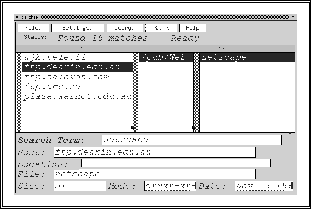

ARCHIE er et klient/tjener basert system som gjør det mulig å lete i ``anonymous ftp'' arkiv over hele verden uten å kople seg opp til arkivene.
Dette er mulig ved at tjener-delen av ARCHIE har en beskrivelse av de forskjellige arkivene, mens klient-delen kun snakker med disse ARCHIE databasevertene (tjenerne). ARCHIE tjenerne bygger opp indekser over de forskjellige FTP serverne med faste mellomrom, og kan også utveksle slik informasjon med andre ARCHIE tjenere.
Vha. ARCHIE klienten (det programmet man bruker for å lete) kan man så søke etter ord og uttrykk, fil- og dokumentnavn etc., og vil få tilbake en liste over FTP arkiver som har dokumenter som matcher det man søker etter. De fleste ARCHIE klientene har dessuten en mulighet for å downloade fra listen over klaff, slik at man ikke behøver å starte FTP for dette.
Figur  viser et eksempel på dette.
viser et eksempel på dette.
